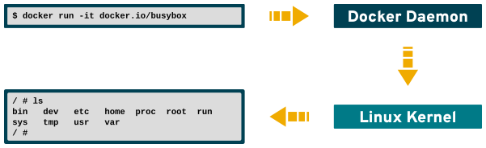
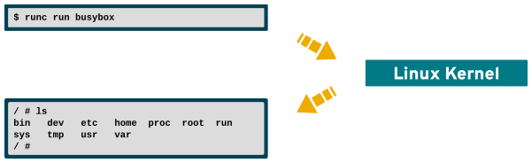
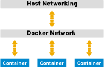

Containers 101
Docker and Beyond

Namespaces
“Namespaces are a feature of the Linux kernel that partitions kernel resources such that one set of processes sees one set of resources while another set of processes sees a different set of resources.”
Capabilities
“Privileged processes bypass all kernel permission checks, while unprivileged processes are subject to full permission checking based on the process's credentials”
$ man capabilities
Virtual File Systems

Processes

Container Processes

Open Container Initiative
www.opencontainers.org
Docker
www.docker.com
runC
github.com/opencontainers/runc
Other runtimes
Docker Deep Dive
Images
$ docker images
REPOSITORY TAG IMAGE ID CREATED SIZE
docker.io/busybox latest 8ac48589692a 3 weeks ago 1.15 MB
docker.io/postgres latest 30121e967865 6 weeks ago 289 MB
docker.io/centos/python-35-centos7 latest 4518d62dfff7 2 months ago 667 MB
docker.io/jekyll/minimal latest 3d1fdb16e38f 3 months ago 161 MB
docker.io/centos/nodejs-6-centos7 latest 0129e5e73319 5 months ago 504 MB
docker.io/asciinema/asciicast2gif latest 83dce8e34be5 5 months ago 405 MB
docker.io/starefossen/github-pages latest 20bbc7303c66 8 months ago 194 MB
Registries
Running
$ docker run -it --name mybusybox docker.io/busybox
/ #
$ docker ps
CONTAINER ID IMAGE COMMAND STATUS NAMES
5e5201e262de docker.io/busybox "sh" Up 12 minutes mybusybox
/ # exit
$
$ docker ps -a
CONTAINER ID IMAGE COMMAND STATUS NAMES
2ba55c6cc742 docker.io/busybox "sh" Exited (0) 2 seconds ago mybusybox
Managing
$ docker start -ai mybusybox
/ #
$ docker kill mybusybox
mybusybox
$ docker rm mybusybox
mybusybox
Building
FROM fedora:latest
CMD ["echo", "Hello World!"]
$ docker build -t penguicon-1 -f Dockerfile.1 .
Sending build context to Docker daemon 2.048 kB
Step 1/2 : FROM fedora:latest
Trying to pull repository docker.io/library/fedora ...
sha256:ec588fc80b05e19d3006bf2e8aa325f0a2e2ff1f609b7afb39176ca8e3e13467: Pulling from docker.io/library/fedora
2176639d844b: Pull complete
Digest: sha256:ec588fc80b05e19d3006bf2e8aa325f0a2e2ff1f609b7afb39176ca8e3e13467
Status: Downloaded newer image for docker.io/fedora:latest
---> 9110ae7f579f
Step 2/2 : CMD echo Hello World!
---> Running in 8d7337876805
---> 2c4d097ab724
Removing intermediate container 8d7337876805
Successfully built 2c4d097ab724
A Classic Reborn
$ docker run penguicon-1
Hello World!
Customize The Build
FROM fedora:latest
RUN dnf install -y figlet
CMD ["figlet", "-f", "slant", "Hello World!"]
Networking
Publish
EXPOSE 8000
$ docker run --publish --name container-a myimage
Linking
$ docker run --link container-a --name container-b myimage
Storage
$ docker run --volume /tmp/foo:/data --name container-a myimage
Security

Case Study
Architecture

Demo
On the Horizon
buildah • github.com/projectatomic/buildah
kaniko • github.com/GoogleContainerTools/kaniko
libpod • https://github.com/projectatomic/libpod
skopeo • github.com/projectatomic/skopeo
cri-o • cri-o.io/
Recap
Docker • docs.docker.com
Open Container Initiative • www.opencontainers.org
runC • runc.net
This presentation
github.com/elmiko/slidedecks/tree/2018/penguicon-containers-101
Stay in touch!
Michael McCune
Twitter • @FOSSjunkie
elmiko.github.io